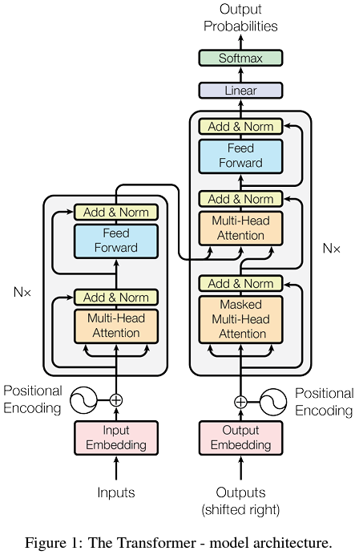
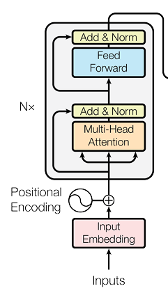
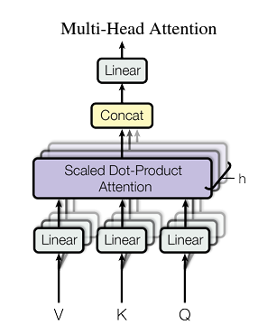
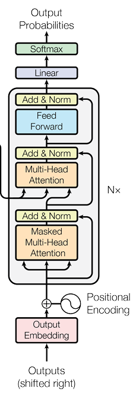
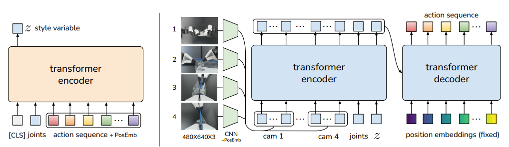
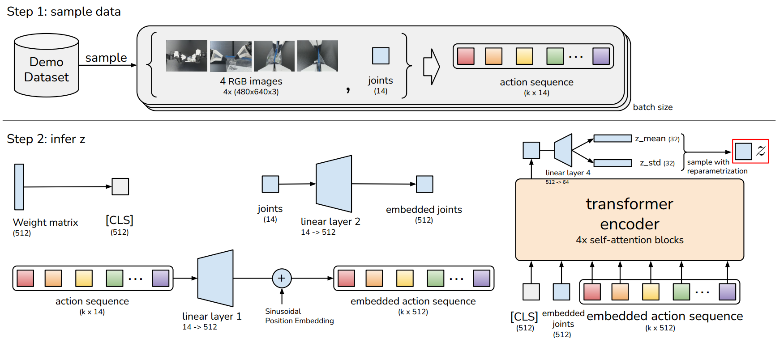
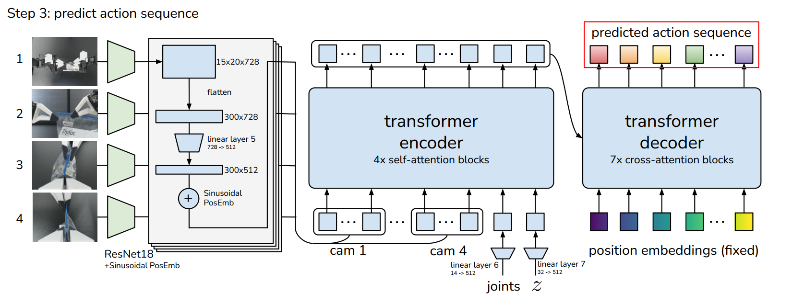
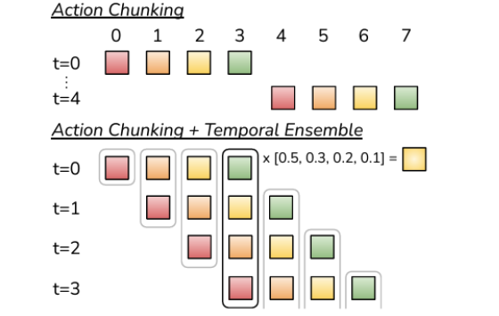
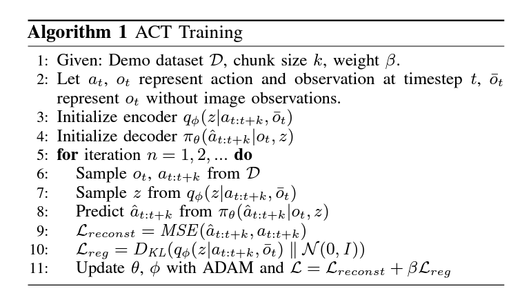

Vision Guided Imitation Learning using Action Chunk Transformer#
The Action Chunking with Transformers (ACT) technique in single-arm robotic manipulation for vision-guided pick-and-place tasks. ACT employs a Conditional Variational Autoencoder (CVAE) to predict sequences of actions, termed “action chunks,” which are groups of actions predicted together to achieve more complex tasks efficiently. Unlike traditional methods that rely solely on joint position data and predict individual actions, our approach integrates visual data to enrich the learning context and enhance execution precision. We acquired the expert data by providing manual demonstrations of the task, allowing the model to learn from real-time, complex action sequences. By predicting these action chunks instead of single actions, the ACT model adapts from dual-arm to single-arm configurations, enhancing control strategies and demonstrating significant improvements in the robot’s speed, precision, and reliability. This substantiates the paper’s title, “Vision-Guided Imitation Learning Using Action Chunk Transformers,” highlighting the critical role of vision in advancing robotic control systems.
Transformer#
This is from the main paper "Attention is all you need " .It’s designed to encode a sequence into a set of context-aware vector representations, relying heavily on self-attention and position-wise operations, without using recurrence (like RNNs) or convolution.

The transformer architecture is divided into two parts.
Encoder
Decoder
Encoder#

First of all the encoder transforms the input tokens into continuous embeddings and adds positional encodings, resulting in a sequence of vectors that now carry both semantic and positional information.
Multi-head Attention#

- Take an input embedding with a dimension of 256.
- Split the embedding into 8 segments, each with a dimension of 32.
- Pass each segment through its own linear layer.
- Feed the outputs of these linear layers into the Scaled Dot Product Attention mechanism.
- **Scaled Dot Product Attention**
$$
\mathrm{Attention}(Q,K,V) = \text{softmax}\!\biggl(\frac{QK^{T}}{\sqrt{d_{k}}}\biggr)V
$$

We concatenate the various segments we initially divided, restoring them to the original input embedding size. This concatenated output is then passed through a Linear layer, which produces the final output of the Attention mechanism.
Decoder#

The decoder receives the encoder’s output and feeds it into the multi-headed attention mechanism.
The only change in the decoder is that within its multi-headed attention, the values and keys are sourced from the encoder, while the queries are derived from the decoder’s preceding output.
Main Overview of the ACT#

The main architecture of the Action Chunk Transformer incorporates two distinct encoders. On the left side, one encoder is dedicated to processing action sequences along with position embeddings, which are then integrated into a style variable.
STEP 1#
Encoding Latent Variations: The encoder on the left side compresses the action sequence and joint observations into a latent variable z. This variable captures the “style” of the action, focusing on unique motion patterns while ignoring specific details.
Facilitating Stochasticity:
z introduces necessary stochasticity, allowing the model to account for multiple plausible action sequences from the same input, which is vital during training.
Test-Time Simplicity:
At test time, z is set to the mean of its prior distribution, usually zero, to simplify the inference process by:
Eliminating the need for random sampling.
Streamlining the generation of deterministic action sequences.
In essence, z aids in learning a probabilistic representation of action variations during training but is simplified to a deterministic value at test time.
Finally, the encoder on the right further supports the training process by handling additional aspects of the input data, ensuring comprehensive learning and adaptation by the model.
This structure allows the transformer to manage and learn from complex action sequences in a highly effective manner.
STEP 2#

System Overview#
The system is designed to process visual input from cameras to predict the movement or configuration of robot joints. It integrates convolutional neural networks (CNNs) and transformers to achieve this, using image data to determine how the robot should adjust its joints.
Image Input and CNN Processing#
Input Images: The input consists of RGB images with a resolution of 640x480 pixels. If there are multiple cameras, each provides an image of this size.
CNN Backbone (ResNet18): The images are first processed by a convolutional neural network (CNN), specifically using ResNet18 as the backbone. This CNN is tasked with extracting relevant features from the raw images. The CNN reduces the spatial dimensions of the image while increasing the depth of features:
Output Dimension: After passing through the CNN, the dimensions of each image are reduced to a feature map of 300x512. This size represents a flattened form of the original feature maps, which may initially be spatially structured (e.g., 15x20 pixels with 512 feature channels).
Feature Tokenization and Transformer Encoding#
Tokenization: The output from the CNN is considered as a series of tokens. Each pixel in the 300x512 map is treated as an individual token, carrying rich feature information.
Inputs for Transformer:
Observations: The tokens derived from the CNN output.
Joint States: Current or previous states of the robot’s joints are also inputted into the transformer as a 1x512 vector. This informs the model of the robot’s current configuration.
Latent Style Variable
z: A style variable (also of size 1x512) is included to possibly capture and integrate additional contextual or style-specific information which may influence how the output should be adapted.
Decoding and Output Prediction#
Decoder: The decoder part of the transformer then takes the encoded data and, through a series of transformations, predicts the sequence of joint angles. These predictions are formatted as sequences (kx8), where
krepresents different prediction points or time steps, and 8 could represent the number of joints or the dimensionality of each joint’s output.Output: The final output is a sequence predicting how the joints should move or be positioned based on the visual input and the given conditions (latent variables and joint states).
Temporial Ensembling#

Action Chunking#
Action chunking involves predicting a sequence of actions for multiple future time steps, starting at t=0. Initially, the model predicts actions for four future time steps, which the robot then executes sequentially. Once these actions are completed, at t=4, the model again predicts the next four actions. This pattern continues, allowing the robot to perform tasks by planning several steps ahead.
Action Chunking with Temporal Ensembling#
In the enhanced method combining Action Chunking and Temporal Ensembling, the model initially predicts four actions at t=0 and executes the first action immediately. At each subsequent time step, such as t=1, the model predicts another set of four actions. To determine the next action to execute, the model averages the predictions from the current time step with the predictions from the previous time step. Specifically, it averages the current state’s prediction with the first state’s prediction from the new batch. This averaging process is used at each time step to smooth the trajectory of actions, ensuring that the robot’s motion is consistent.
Algorithm#

CODE#
Datset Prepare#
The datset structure
`Contents of the HDF5 file:
action: <HDF5 dataset "action": shape (149, 8), type "<f8">
- Shape: (149, 8), Type: float64
observations: <HDF5 group "/observations" (2 members)>
images: <HDF5 group "/observations/images" (1 members)>
top: <HDF5 dataset "top": shape (149, 480, 640, 3), type "|u1">
- Shape: (149, 480, 640, 3), Type: uint8
qpos: <HDF5 dataset "qpos": shape (149, 8), type "<f8">
- Shape: (149, 8), Type: float64`
This code is in live_record.py
import cv2
import os
import h5py
import numpy as np
from controller.robot_state import *
class CameraController:
def __init__(self, camera_index=0):
self.capture = cv2.VideoCapture(camera_index)
self.capture.set(cv2.CAP_PROP_FRAME_WIDTH, 640)
self.capture.set(cv2.CAP_PROP_FRAME_HEIGHT, 480)
self.data = []
self.robot_state_data = []
self.recording = False
self.franka = RobotController()
# self.franka.initial_pose()
def capture_frames(self):
print("Press 's' to start/stop recording. Press 'q' to quit.")
while True:
ret, frame = self.capture.read()
if ret:
cv2.imshow('Camera Feed', frame)
key = cv2.waitKey(1) & 0xFF
if key == ord('s'):
self.recording = not self.recording
if self.recording:
print("Recording started.")
else:
print("Recording stopped. Saving data...")
self.record_extra_frames(5)
self.save_data()
self.data = []
self.robot_state_data = []
elif key == ord('q'):
break
if self.recording:
self.data.append(frame)
robot_state = self.get_robot_state(0) # Initial state with '0'
self.robot_state_data.append(robot_state)
cv2.destroyAllWindows()
def get_robot_state(self, end_marker=0):
angles = self.franka.angles()
return np.concatenate((angles, [end_marker]))
def record_extra_frames(self, count):
last_frame = self.data[-1]
last_state = self.get_robot_state(1) # Final state with '1'
for _ in range(count):
self.data.append(last_frame)
self.robot_state_data.append(last_state)
def save_data(self):
if not self.data:
print("No data to save.")
return
episode_idx = 0
directory = "real_dir2"
if not os.path.exists(directory):
os.makedirs(directory)
while os.path.exists(os.path.join(directory, f'episode_{episode_idx}.hdf5')):
episode_idx += 1
file_path = os.path.join(directory, f'episode_{episode_idx}.hdf5')
with h5py.File(file_path, 'w') as root:
root.attrs['sim'] = True
obs = root.create_group('observations')
images = obs.create_group('images')
camera_names = ['top']
for cam_name, data in zip(camera_names, [self.data]):
image_data = np.array(data, dtype='uint8')
images.create_dataset(cam_name, data=image_data, dtype='uint8', chunks=(1, 480, 640, 3))
robot_data = np.array(self.robot_state_data, dtype='float64')
obs.create_dataset('qpos', data=robot_data)
root.create_dataset('action', data=robot_data)
def main():
camera_index = 0
camera_controller = CameraController(camera_index)
camera_controller.capture_frames()
if __name__ == '__main__':
main()
Dataset Sampler#
import os
import h5py
import torch
import numpy as np
from einops import rearrange
from torch.utils.data import DataLoader
# from policy import ACTPolicy , CNNMLPPolicy
from policy import ACTPolicy , CNNMLPPolicy
import IPython
e = IPython.embed
class EpisodicDataset(torch.utils.data.Dataset):
def __init__(self, episode_ids, dataset_dir, camera_names, norm_stats):
super(EpisodicDataset).__init__()
self.episode_ids = episode_ids
self.dataset_dir = dataset_dir
self.camera_names = camera_names
self.norm_stats = norm_stats
self.is_sim = None
#self.__getitem__(0) # initialize self.is_sim
def __len__(self):
return len(self.episode_ids)
def __getitem__(self, index):
sample_full_episode = False # hardcode
episode_id = self.episode_ids[index]
dataset_path = os.path.join(self.dataset_dir, f'episode_{episode_id}.hdf5')
with h5py.File(dataset_path, 'r') as root:
is_sim = root.attrs['sim']
original_action_shape = root['/action'].shape
episode_len = original_action_shape[0]
if sample_full_episode:
start_ts = 0
else:
start_ts = np.random.choice(episode_len)
# get observation at start_ts only
qpos = root['/observations/qpos'][start_ts]
# qvel = root['/observations/qvel'][start_ts]
image_dict = dict()
for cam_name in self.camera_names:
image_dict[cam_name] = root[f'/observations/images/{cam_name}'][start_ts]
# get all actions after and including start_ts
if is_sim:
action = root['/action'][start_ts:]
action_len = episode_len - start_ts
else:
action = root['/action'][max(0, start_ts - 1):] # hack, to make timesteps more aligned
action_len = episode_len - max(0, start_ts - 1) # hack, to make timesteps more aligned
self.is_sim = is_sim
padded_action = np.zeros(original_action_shape, dtype=np.float32)
padded_action[:action_len] = action
is_pad = np.zeros(episode_len)
is_pad[action_len:] = 1
# new axis for different cameras
all_cam_images = []
for cam_name in self.camera_names:
all_cam_images.append(image_dict[cam_name])
all_cam_images = np.stack(all_cam_images, axis=0)
# construct observations
image_data = torch.from_numpy(all_cam_images)
qpos_data = torch.from_numpy(qpos).float()
action_data = torch.from_numpy(padded_action).float()
is_pad = torch.from_numpy(is_pad).bool()
# channel last
image_data = torch.einsum('k h w c -> k c h w', image_data)
# normalize image and change dtype to float
image_data = image_data / 255.0
action_data = (action_data - self.norm_stats["action_mean"]) / self.norm_stats["action_std"]
qpos_data = (qpos_data - self.norm_stats["qpos_mean"]) / self.norm_stats["qpos_std"]
return image_data, qpos_data, action_data, is_pad
Here
image_data: Sampling image data
qpos_data: Positions (eg joint angles)
action_data: Actions
is_pad : It tells us how far it padded.
Policy#
import torch.nn as nn
from torch.nn import functional as F
import torchvision.transforms as transforms
from detr.main import build_ACT_model_and_optimizer, build_CNNMLP_model_and_optimizer
import IPython
e = IPython.embed
class ACTPolicy(nn.Module):
def __init__(self, args_override):
super().__init__()
model, optimizer = build_ACT_model_and_optimizer(args_override)
self.model = model # CVAE decoder conditional Variational Auto encoder
self.optimizer = optimizer
self.kl_weight = args_override['kl_weight']
print(f'KL Weight {self.kl_weight}')
def __call__(self, qpos, image, actions=None, is_pad=None):
env_state = None
normalize = transforms.Normalize(mean=[0.485, 0.456, 0.406],
std=[0.229, 0.224, 0.225])
image = normalize(image)
if actions is not None: # training time
actions = actions[:, :self.model.num_queries]
is_pad = is_pad[:, :self.model.num_queries]
a_hat, is_pad_hat, (mu, logvar) = self.model(qpos, image, env_state, actions, is_pad)
total_kld, dim_wise_kld, mean_kld = kl_divergence(mu, logvar)
loss_dict = dict()
all_l1 = F.l1_loss(actions, a_hat, reduction='none')
l1 = (all_l1 * ~is_pad.unsqueeze(-1)).mean()
loss_dict['l1'] = l1 # regression loss
loss_dict['kl'] = total_kld[0] #
loss_dict['loss'] = loss_dict['l1'] + loss_dict['kl'] * self.kl_weight
return loss_dict
else: # inference time
a_hat, _, (_, _) = self.model(qpos, image, env_state)
return a_hat
def configure_optimizers(self):
return self.optimizer
Training code#
train.py file
from settings.var import *
import os
import pickle
import argparse
from copy import deepcopy
import matplotlib.pyplot as plt
from training.utils import *
parser = argparse.ArgumentParser()
parser.add_argument('--task', type=str, default='')
args = parser.parse_args()
task = args.task
# configs
task_cfg = TASK_CONFIG
train_cfg = TRAIN_CONFIG
policy_config = POLICY_CONFIG
checkpoint_dir = os.path.join(train_cfg['checkpoint_dir'], task)
# device
device = os.environ['DEVICE']
def forward_pass(data, policy):
image_data, qpos_data, action_data, is_pad = data
qpos_data = qpos_data.float()
action_data = action_data.float()
image_data, qpos_data, action_data, is_pad = image_data.to(device),
qpos_data.to(device), action_data.to(device), is_pad.to(device)
return policy(qpos_data, image_data, action_data, is_pad) # TODO remove None
def plot_history(train_history, validation_history, num_epochs, ckpt_dir, seed):
# save training curves
for key in train_history[0]:
plot_path = os.path.join(ckpt_dir, f'train_val_{key}_seed_{seed}.png')
plt.figure()
train_values = [summary[key].item() for summary in train_history]
val_values = [summary[key].item() for summary in validation_history]
plt.plot(np.linspace(0, num_epochs-1, len(train_history)), train_values, label='train')
plt.plot(np.linspace(0, num_epochs-1, len(validation_history)), val_values, label='validation')
# plt.ylim([-0.1, 1])
plt.tight_layout()
plt.legend()
plt.title(key)
plt.savefig(plot_path)
print(f'Saved plots to {ckpt_dir}')
def train_bc(train_dataloader, val_dataloader, policy_config):
# load policy
policy = make_policy(policy_config['policy_class'], policy_config)
policy.to(device)
# load optimizer
optimizer = make_optimizer(policy_config['policy_class'], policy)
# create checkpoint dir if not exists
os.makedirs(checkpoint_dir, exist_ok=True)
train_history = []
validation_history = []
min_val_loss = np.inf
best_ckpt_info = None
for epoch in range(train_cfg['num_epochs']):
print(f'\nEpoch {epoch}')
# validation
with torch.inference_mode():
policy.eval()
epoch_dicts = []
for batch_idx, data in enumerate(val_dataloader):
forward_dict = forward_pass(data, policy)
epoch_dicts.append(forward_dict)
epoch_summary = compute_dict_mean(epoch_dicts)
validation_history.append(epoch_summary)
epoch_val_loss = epoch_summary['loss']
if epoch_val_loss < min_val_loss:
min_val_loss = epoch_val_loss
best_ckpt_info = (epoch, min_val_loss, deepcopy(policy.state_dict()))
print(f'Val loss: {epoch_val_loss:.5f}')
summary_string = ''
for k, v in epoch_summary.items():
summary_string += f'{k}: {v.item():.3f} '
print(summary_string)
# training
policy.train()
optimizer.zero_grad()
for batch_idx, data in enumerate(train_dataloader):
forward_dict = forward_pass(data, policy)
# backward
loss = forward_dict['loss']
loss.backward()
optimizer.step()
optimizer.zero_grad()
train_history.append(detach_dict(forward_dict))
epoch_summary = compute_dict_mean(train_history[(batch_idx+1)*epoch:(batch_idx+1)*(epoch+1)])
epoch_train_loss = epoch_summary['loss']
print(f'Train loss: {epoch_train_loss:.5f}')
summary_string = ''
for k, v in epoch_summary.items():
summary_string += f'{k}: {v.item():.3f} '
print(summary_string)
if epoch % 200 == 0:
ckpt_path = os.path.join(checkpoint_dir, f"policy_epoch_{epoch}_seed_{train_cfg['seed']}.ckpt")
torch.save(policy.state_dict(), ckpt_path)
plot_history(train_history, validation_history, epoch, checkpoint_dir, train_cfg['seed'])
ckpt_path = os.path.join(checkpoint_dir, f'policy_last.ckpt')
torch.save(policy.state_dict(), ckpt_path)
if __name__ == '__main__':
# set seed
set_seed(train_cfg['seed'])
# create ckpt dir if not exists
os.makedirs(checkpoint_dir, exist_ok=True)
# number of training episodes
data_dir = os.path.join(task_cfg['dataset_dir'], task)
num_episodes = len(os.listdir(data_dir))
# load data
train_dataloader, val_dataloader, stats, _ = load_data(data_dir, num_episodes, task_cfg['camera_names'],
train_cfg['batch_size_train'], train_cfg['batch_size_val'])
# save stats
stats_path = os.path.join(checkpoint_dir, f'dataset_stats.pkl')
with open(stats_path, 'wb') as f:
pickle.dump(stats, f)
# train
train_bc(train_dataloader, val_dataloader, policy_config)
'''
The data loader is very important bcs we are pluging our input data here
The data lodaer like an iterator or a smampler that samples each part of the data
were we will have the training data validation data and statastics which is just to normalize our data
'''
Model#
import torch
from torch import nn
from torch.autograd import Variable
from .backbone import build_backbone
from .transformer import build_transformer, TransformerEncoder, TransformerEncoderLayer
import numpy as np
import IPython
e = IPython.embed
device = torch.device('cuda')
def reparametrize(mu, logvar):
std = logvar.div(2).exp()
eps = Variable(std.data.new(std.size()).normal_())
return mu + std * eps
def get_sinusoid_encoding_table(n_position, d_hid):
def get_position_angle_vec(position):
return [position / np.power(10000, 2 * (hid_j // 2) / d_hid) for hid_j in range(d_hid)]
sinusoid_table = np.array([get_position_angle_vec(pos_i) for pos_i in range(n_position)])
sinusoid_table[:, 0::2] = np.sin(sinusoid_table[:, 0::2]) # dim 2i
sinusoid_table[:, 1::2] = np.cos(sinusoid_table[:, 1::2]) # dim 2i+1
return torch.FloatTensor(sinusoid_table).unsqueeze(0)
class DETRVAE(nn.Module):
""" This is the DETR module that performs object detection """
def __init__(self, backbones, transformer, encoder, state_dim, num_queries, camera_names):
""" Initializes the model.
Parameters:
backbones: torch module of the backbone to be used. See backbone.py
transformer: torch module of the transformer architecture. See transformer.py
state_dim: robot state dimension of the environment
num_queries: number of object queries, ie detection slot. This is the maximal number of objects
DETR can detect in a single image. For COCO, we recommend 100 queries.
aux_loss: True if auxiliary decoding losses (loss at each decoder layer) are to be used.
"""
super().__init__()
self.num_queries = num_queries
self.camera_names = camera_names
self.transformer = transformer
self.encoder = encoder
hidden_dim = transformer.d_model
self.action_head = nn.Linear(hidden_dim, state_dim)
self.is_pad_head = nn.Linear(hidden_dim, 1)
self.query_embed = nn.Embedding(num_queries, hidden_dim)
if backbones is not None:
self.input_proj = nn.Conv2d(backbones[0].num_channels, hidden_dim, kernel_size=1)
self.backbones = nn.ModuleList(backbones)
self.input_proj_robot_state = nn.Linear(8, hidden_dim)
else:
# input_dim = 14 + 7 # robot_state + env_state
self.input_proj_robot_state = nn.Linear(8, hidden_dim)
self.input_proj_env_state = nn.Linear(8, hidden_dim)
self.pos = torch.nn.Embedding(2, hidden_dim)
self.backbones = None
# encoder extra parameters
self.latent_dim = 32 # final size of latent z # TODO tune
self.cls_embed = nn.Embedding(1, hidden_dim) # extra cls token embedding
self.encoder_action_proj = nn.Linear(8, hidden_dim) # project action to embedding
self.encoder_joint_proj = nn.Linear(8, hidden_dim) # project qpos to embedding
self.latent_proj = nn.Linear(hidden_dim, self.latent_dim*2) # project hidden state to latent std, var
self.register_buffer('pos_table', get_sinusoid_encoding_table(1+1+num_queries, hidden_dim)) # [CLS], qpos, a_seq
# decoder extra parameters
self.latent_out_proj = nn.Linear(self.latent_dim, hidden_dim) # project latent sample to embedding
self.additional_pos_embed = nn.Embedding(2, hidden_dim) # learned position embedding for proprio and latent
def forward(self, qpos, image, env_state, actions=None, is_pad=None):
"""
qpos: batch, qpos_dim
image: batch, num_cam, channel, height, width
env_state: None
actions: batch, seq, action_dim
"""
is_training = actions is not None # train or val
bs, _ = qpos.shape
# actions = actions.to(torch.float32) if actions is not None else actions
# qpos = qpos.to(torch.float32)
# image = image.to(torch.float32)
### Obtain latent z from action sequence
if is_training:
# project action sequence to embedding dim, and concat with a CLS token
action_embed = self.encoder_action_proj(actions) # (bs, seq, hidden_dim)
qpos_embed = self.encoder_joint_proj(qpos) # (bs, hidden_dim)
qpos_embed = torch.unsqueeze(qpos_embed, axis=1) # (bs, 1, hidden_dim)
cls_embed = self.cls_embed.weight # (1, hidden_dim)
cls_embed = torch.unsqueeze(cls_embed, axis=0).repeat(bs, 1, 1) # (bs, 1, hidden_dim)
encoder_input = torch.cat([cls_embed, qpos_embed, action_embed], axis=1) # (bs, seq+1, hidden_dim)
encoder_input = encoder_input.permute(1, 0, 2) # (seq+1, bs, hidden_dim)
# do not mask cls token
cls_joint_is_pad = torch.full((bs, 2), False).to(qpos.device) # False: not a padding
is_pad = torch.cat([cls_joint_is_pad, is_pad], axis=1) # (bs, seq+1)
# obtain position embedding
pos_embed = self.pos_table.clone().detach()
pos_embed = pos_embed.permute(1, 0, 2) # (seq+1, 1, hidden_dim)
# query model
encoder_output = self.encoder(encoder_input, pos=pos_embed, src_key_padding_mask=is_pad)
encoder_output = encoder_output[0] # take cls output only
latent_info = self.latent_proj(encoder_output)
mu = latent_info[:, :self.latent_dim]
logvar = latent_info[:, self.latent_dim:]
latent_sample = reparametrize(mu, logvar)
latent_input = self.latent_out_proj(latent_sample)
else:
mu = logvar = None
latent_sample = torch.zeros([bs, self.latent_dim], dtype=torch.float32).to(qpos.device)
latent_input = self.latent_out_proj(latent_sample)
if self.backbones is not None:
# Image observation features and position embeddings
all_cam_features = []
all_cam_pos = []
for cam_id, cam_name in enumerate(self.camera_names):
features, pos = self.backbones[0](image[:, cam_id]) # HARDCODED for single back bone
# features, pos = self.backbones[cam_id](image[:, cam_id])
features = features[0] # take the last layer feature
pos = pos[0]
all_cam_features.append(self.input_proj(features))
all_cam_pos.append(pos)
# proprioception features
proprio_input = self.input_proj_robot_state(qpos)
# fold camera dimension into width dimension
src = torch.cat(all_cam_features, axis=3)
pos = torch.cat(all_cam_pos, axis=3)
hs = self.transformer(src, None, self.query_embed.weight, pos, latent_input, proprio_input, self.additional_pos_embed.weight)[0]
else:
qpos = self.input_proj_robot_state(qpos)
env_state = self.input_proj_env_state(env_state)
transformer_input = torch.cat([qpos, env_state], axis=1) # seq length = 2
hs = self.transformer(transformer_input, None, self.query_embed.weight, self.pos.weight)[0]
a_hat = self.action_head(hs)
is_pad_hat = self.is_pad_head(hs)
return a_hat, is_pad_hat, [mu, logvar]
def build_encoder(args):
d_model = args.hidden_dim # 256
dropout = args.dropout # 0.1
nhead = args.nheads # 8
dim_feedforward = args.dim_feedforward # 2048
num_encoder_layers = args.enc_layers # 4 # TODO shared with VAE decoder
normalize_before = args.pre_norm # False
activation = "relu"
encoder_layer = TransformerEncoderLayer(d_model, nhead, dim_feedforward,
dropout, activation, normalize_before)
encoder_norm = nn.LayerNorm(d_model) if normalize_before else None
encoder = TransformerEncoder(encoder_layer, num_encoder_layers, encoder_norm)
return encoder
def build(args):
state_dim = 8 # TODO hardcode
# From state
# backbone = None # from state for now, no need for conv nets
# From image
backbones = []
backbone = build_backbone(args)
backbones.append(backbone)
transformer = build_transformer(args)
encoder = build_encoder(args)
model = DETRVAE(
backbones,
transformer,
encoder,
state_dim=state_dim,
num_queries=args.num_queries,
camera_names=args.camera_names,
)
n_parameters = sum(p.numel() for p in model.parameters() if p.requires_grad)
print("number of parameters: %.2fM" % (n_parameters/1e6,))
return model